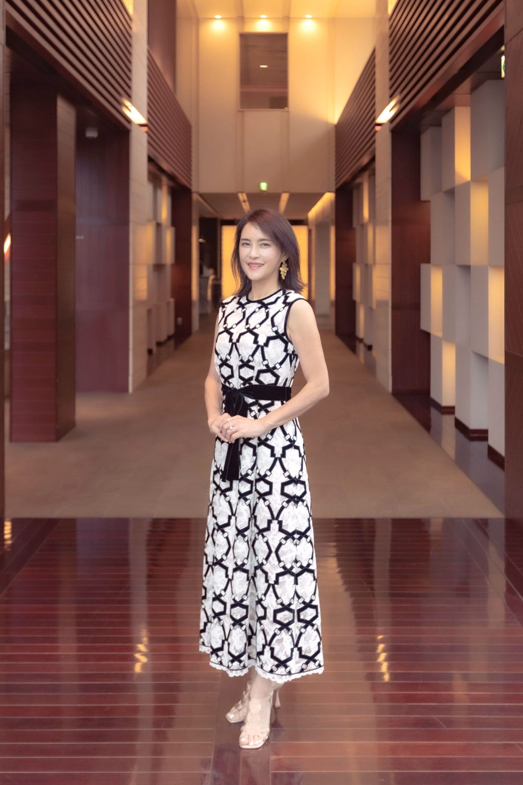
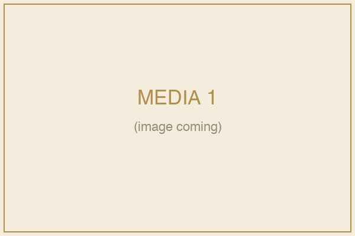
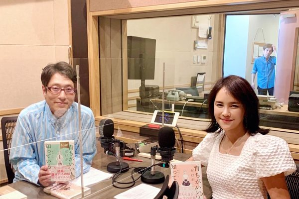
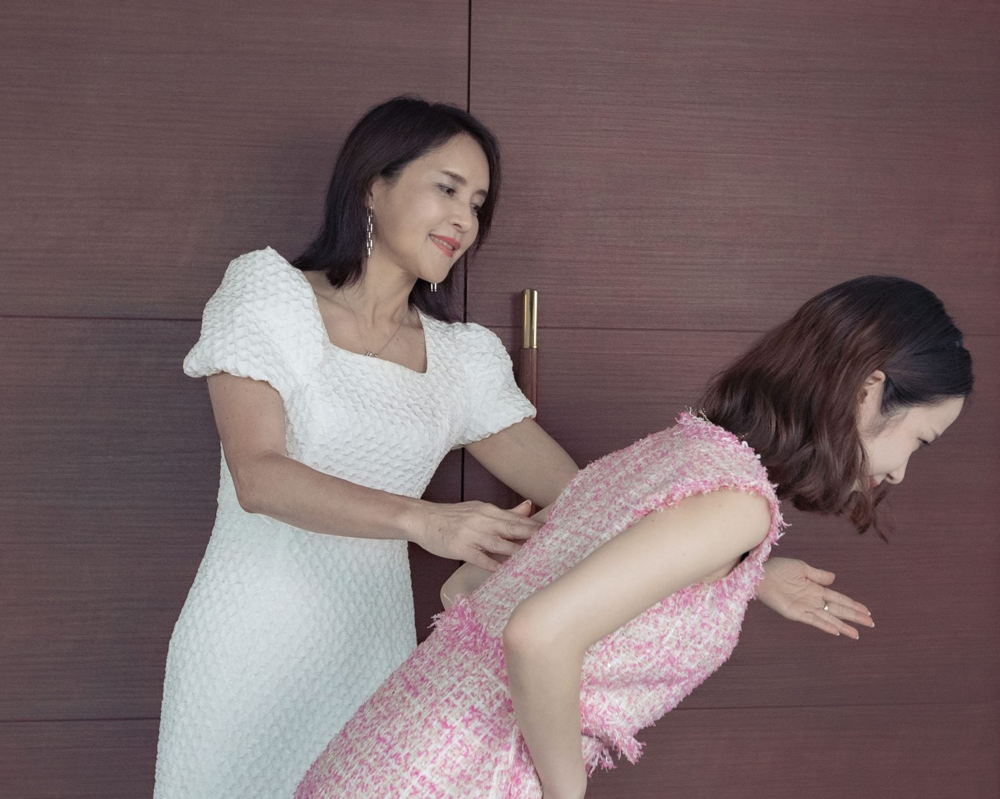
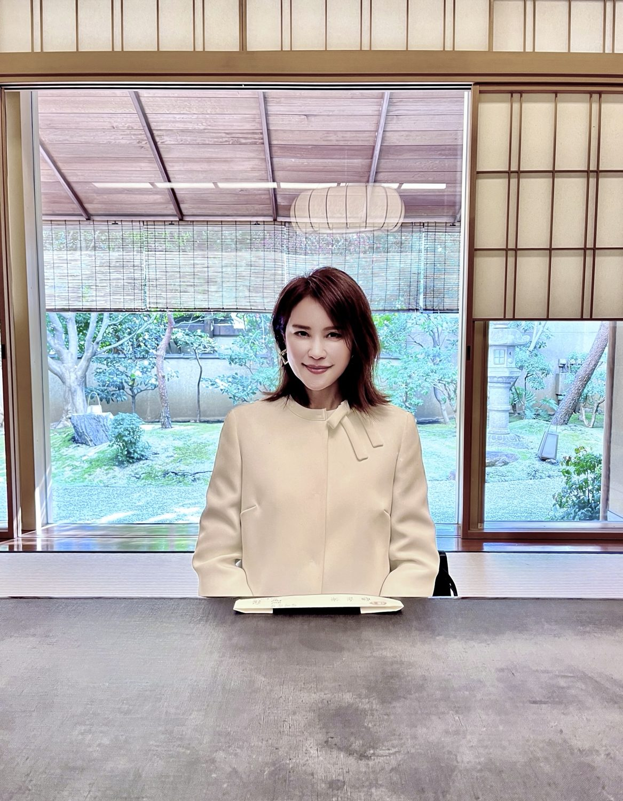
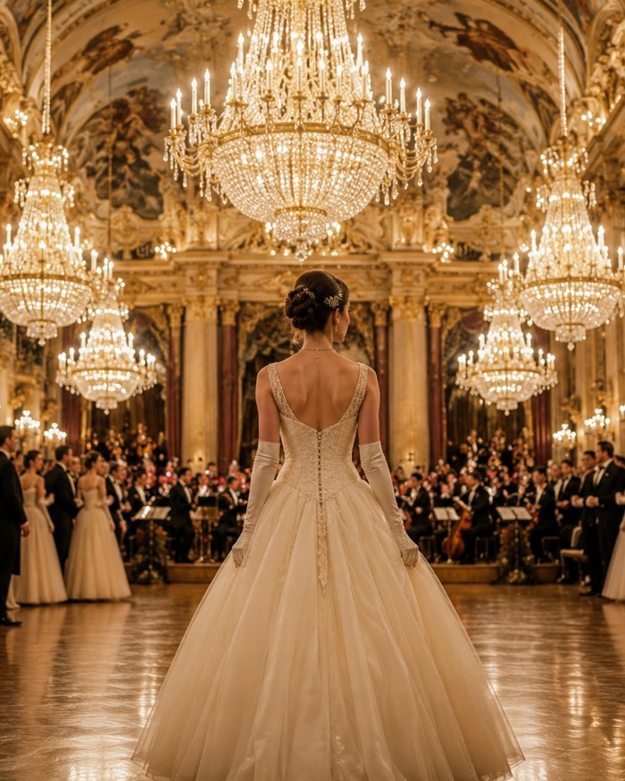

ENTRY ｜ 一期生に応募する一期生に応募する
［ デビュタント（内弟子）・一期生にエントリーする ］
9月開講／期間3ヶ月／総額25万円／少人数・審査制
まずはエントリーから。審査のうえ、直接お返事します。今、自信がなくて大丈夫。その想いごと、受け止めます。
※この時点で、お支払いは発生しません。一期生の席には、限りがあります。
育ちは、変えられる。あなたにも、あなたのお子さまにも。──諏内えみと過ごす3ヶ月、少人数の一期生「デビュタント（内弟子）」、2026年9月開講。
同窓会で。ずっと憧れていた、あの華やかな女性。
その隣に立つと、心のどこかで羨ましく思いながら、自分のふるまいが、気になる。
お見合いや、婚活の場でも。
素敵な人を前にするほど——
見られているのは器量より“育ち”かもしれないと、ふいに怖くなる。
（うちなんて、全然です）（私の育ちは、普通だったので……）
口癖のように、自分を一段下げてしまう。
義実家の食事会でも、わが子のお受験の場面でも、同じ引け目が、ふっと顔を出す。
いちばん見られたくない相手——
憧れのあの人にこそ、自分の“育ち”が見透かされる。それが、こわい。
もし、あなたがそうだとしたら。ここから先は、あなたのために書きました。
諏内えみ。マナー・所作・話し方の指導者として、いま最も信頼を集める一人です。
著書『「育ちがいい人」だけが知っていること』（ダイヤモンド社）は、2020年から現在まで最も売れたマナー本となり、シリーズ累計は70万部を超えました。
テレビ出演はメディア200本超——『世界一受けたい授業』『ホンマでっか!?TV』『王様のブランチ』『あさイチ』『ぐるナイ』ほか多数。雑誌『ゼクシィ』保存版「結婚マナー」を全監修し、各誌にも登場。人気ドラマ・映画で有名女優の所作指導も多数手がけています。皇室や政財界の要人を「お迎えする」VIPアテンダントも務めてきました。登録商標『育ちがいい人®』を持つ、育ちの第一人者です。
「育ちがいい」とは、生まれの良さのことではありません。後天的に身につけられる「振る舞いの型」のこと。だからこそ、彼女は言います。「育ちは、いつからでも変えられます」と。



本を書いても、テレビに出ても、いつも心のどこかで思っていました。——文字や画面では、どうしても伝わりきらないものがある、と。手の角度、声の置き方、間（ま）、まなざし。それは、すぐ隣で、お一人おひとりに合わせて、直接お渡しするしかありません。
これまで、何千人もの方が「変われた」瞬間に立ち会ってきました。その方々の喜び溢れるお顔を思い浮かべるたび、もっと近くで、もっと深く伝えたい——その想いが募って、はじめて少人数の「デビュタント」という形にたどり着きました。
美しい所作を見るたび、思ってきたかもしれません。「あの人は、生まれが違うから」と。でも、違います。
諏内えみが体系化した「育ちがいい人」の振る舞いは、具体的な「型」でできています。
背筋の伸ばし方。お辞儀の角度と、止める時間。椅子への座り方。お箸の取り上げ方。初対面でのひと言目。人を立てる相づち。気品が漂う、声の高さと速さ。
どれも、感覚ではなく、再現できる「型」です。
つまり──才能のあるなしも、生まれた家も、これまでの育ちも、関係ありません。型を一つずつ身につければ、品は、後からあなたのものになります。
これが、「育ちは、変えられる」の正体です。

たとえば──10年間、引きこもっていた、まりさん（30代）。
人前に出ることも、自分に自信を持つことも、できなかった。それが、所作と立ち居振る舞いを整えていくうちに——「人生が180度、劇的に変わりました」。お見合いの話が一気に増え、出会いも多くなった。いまでは“選ばれる”女性として、堂々と立っています。
変わったのは、性格ではありません。ふるまいです。
人生が180度、劇的に変わりました。
上品、エレガントと褒められるように。ハッとさせる立ち居振る舞いに。
※ 掲載するお写真はデザイン段階で選定します。開講後は一期生のお声を掲載予定です。
“デビュタント”とは、本来、社交界へ初めて踏み出す女性のこと。ここでは——諏内えみのもとで、品のある世界へ、今日から踏み出すあなた。
その一歩を選んだ一期生を、「デビュタント（内弟子）」と呼びます。
ここでは、諏内えみが、みずから直接お教えします。本を読む、動画を見る──ではありません。あなたのために、すぐ隣で。
3ヶ月をかけて、所作と品位の「型」を、体に入れていきます。
・9月開講 ・期間は3ヶ月 ・少人数の、審査制 ・記念すべき、一期生
人数を絞るのは、一人ひとりを直接見るためです。だからこそ、ここで身につくものは、本や動画では決して届かない深さになります。
あなたが、ずっと「あちら側」だと思っていた世界。その扉の、いちばん内側へ。
この3ヶ月に、これらすべてが含まれます。
「育ちがいい人」の所作・話し方・立ち居振る舞いを、体系立てて。
知識で終わらせず、実際に体を動かし、声に出し、その場で「できる」状態に。
あなたの今の振る舞いを、一人ひとり見て、あなたに合わせて整えます。
同じ志を持つ少人数の一期生と、3ヶ月を共に。半歩引かずにいられる仲間ができます。
なにより、諏内えみ本人が、すぐ隣で導きます。これがデビュタントの、いちばんの価値です。
お子さまのお受験やご家庭との両立を考え、無理なく続けられる形と日程で設計します。
※ 開催形式・曜日・時間・全何回かは、確定し次第ここに明記します（現在調整中）。
「あの方、誰…？」思わず友人が振り返る。ずっと羨ましく見ていたあの人から、今度はあなたが羨望される側に。
憧れ続けた人と、自然に出会える。
背筋が伸び、もう身構えなくていい。「育ちのいい方」と、言葉にされなくても伝わっている。
人の視線が集まる場所でも、あなたの佇まいがその場の品位をそっと引き上げる。

育ちを極めた、その先に。憧れていた、いちばん遠い場面が、待っているかもしれません。
──ウィーン。宮殿の大広間。無数のシャンデリア。オーケストラの最初の一音とともに、扉が開く。社交界デビューの、舞踏会。
かつて貴婦人たちが、その夜の主役として立った場所。テレビの中で、映画の中で、遠くから見つめてきた、あの夜。
その白いドレスを着て、フロアの中央に進み出るのが、「特別な誰か」ではなく、あなたであったとしたら。
半歩引いて見ていた景色の、ど真ん中に、あなた自身が立つ。それは、夢物語ではありません。今日の小さな一歩から、つながっている、あなたの未来の一場面です。
※ウィーンの舞踏会への参加（別料金）について詳しくは、本科の中でお伝えします。

正直に、書きます。憧れたまま、半歩引いて見ているだけなら、その景色は、これからもずっと「あちら側」のままです。
来年の同窓会でも、あなたはまた、あの華やかな女性と自分を比べて、半歩引くかもしれません。お見合いや婚活の場でも、義実家の食卓でも、心の奥で「うちなんて」とつぶやくかもしれません。
そして、その引け目を、いちばん見られたくない人——憧れの友人に、知らず知らず見せてしまう。
型は、いつからでも身につきます。でも、出会いにも、晴れの場にも、その時々の“旬”があります。待ってはくれません。
「いつか変わりたい」を、「今日、変わりはじめる」に。その一日の差が、来年のあなたを変えます。
所作と品位の「型」のすべて、実践ワーク、個別の添削、一期生の同期、そして諏内えみ本人による3ヶ月の直接指導。そのすべてを含めて──。
月1万円・出入り自由。まず世界観に触れる入口。
3ヶ月・諏内えみに直接師事。型のすべてと個別添削。
その先の道。さらに深く学ぶ上位ステージ。
「育ち」を受け継ぎ、伝える側へ。
※ 直弟子・襲名は、その先に続く道のご参考です。今回のご案内は「内弟子（デビュタント）」と「見習い（オーディター）」の2つです。
内弟子は、誰でも入れる講座ではありません。一人ひとりを直接見て、3ヶ月伴走するためには、どうしても、人数を絞らなければなりません。
そのため、一期生は15名 限定。お申し込みは、エントリー審査のうえ、決定させていただきます。
ここで安心していただきたいのは——この審査は、「育ちのいい人」を選ぶためのものではない、ということ。むしろ逆です。本気で変わりたい、その想いがあるかどうか。向き合うのは、そこだけです。
今の自分に自信がなくて当たり前。だからこそ、ここへ来てほしい。
最後に、これだけは伝えさせてください。
あなたは、ずっと、ちゃんとあろうとしてきました。お義母さまの隣で身構えながらも、家族のために、品よくあろうとしてきた。
面接室で自分を責めながらも、わが子のために、誰よりも必死に学んできた。
「うちなんて」と言いながらも、本当は、誰よりもこの家庭を大切にしてきた。
足りなかったのは「品」ではありません。本当の作法を、まだ知らなかっただけ。
育ちは、変えられます。あなたにも、あなたのお子さまにも。
ずっと羨ましく見上げてきた、あのシャンデリアの下。その場面の主役は、これからは、あなたです。
今度は、あなたが、羨望される番です。
いつなさるの？ その一歩を、今日、ここから。
［ デビュタント（内弟子）・一期生にエントリーする ］
9月開講／期間3ヶ月／総額25万円／少人数・審査制
まずはエントリーから。審査のうえ、直接お返事します。今、自信がなくて大丈夫。その想いごと、受け止めます。
※この時点で、お支払いは発生しません。一期生の席には、限りがあります。
デビュタント（内弟子）に心は動いているけれど、いきなりの一歩には勇気がいる。
──そんなあなたのために、もう一つの入口があります。
「オーディター（見習い）」月額1万円。出入りは自由です。
まずは、この世界観の中に、身を置いてみてください。
合わないと思えば、いつでも離れて大丈夫。気が向いたら、また戻ってこられます。
大きな決断は、まだ要りません。ただ、扉の手前まで来てみる
──それだけで、もう景色は少し変わります。